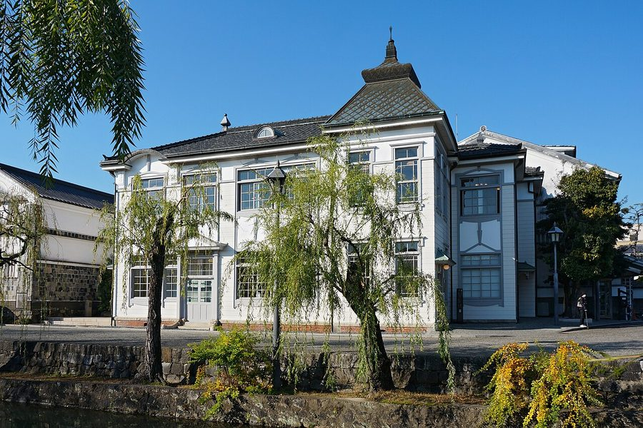
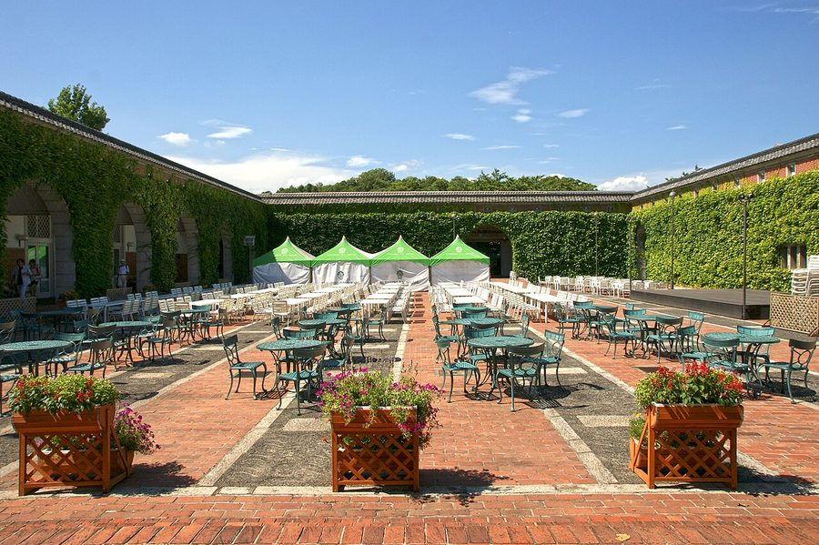
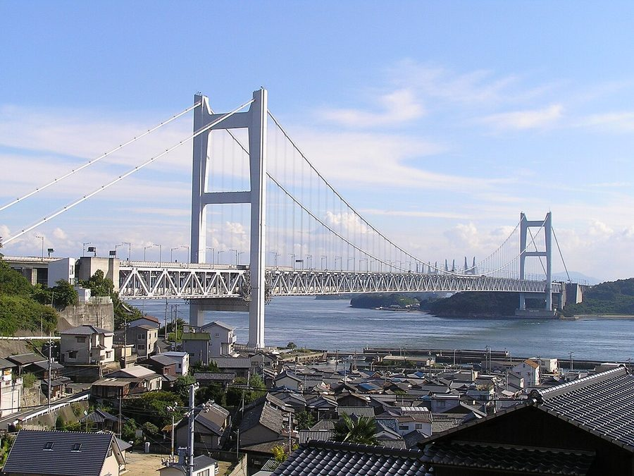
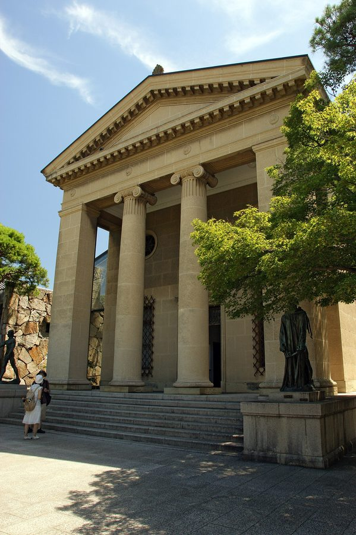

岡山県倉敷市のソフトクリーム・ジェラート・かき氷（23件）
寄り道スポット検索アプリ「ヨッテコ」の収録データから、岡山県倉敷市のソフトクリーム・ジェラート・かき氷を営業時間・料金つきで一覧にしました（2026年8月時点）。
最も遅くまで開いているのは魅惑のアイス（23:00まで）。
岡山県倉敷市はどんなまち？
数字で見る🔍岡山県倉敷市
まちの横顔




- 地形と気候: 市の中西部を高梁川が北から南に流れて瀬戸内海に注ぎ、平野の多くは干拓地や沖積平野で、児島地域を除き比較的平坦です。児島・玉島・連島など「島」のつく地名が多いのは、元は文字通り島だった土地が干拓で陸続きになった名残りです。気候は温暖で晴れの日が多く雨の少ない瀬戸内海式気候で、高梁川の豊富な水資源のおかげで水不足になることは稀です。南方の四国山地に遮られ、台風が直撃することも滅多にありません。
- 美観地区と瀬戸大橋: 倉敷川沿いの一帯は江戸時代に幕府直轄領（天領）となって栄え、白壁の町並みが倉敷美観地区として今も保存されています。本州と四国を結ぶ瀬戸大橋でも知られ、県内有数の観光の街としての顔を持っています。
- 水島と工業: 臨海部の水島地区には石油コンビナートなど重化学工業地帯が形成され、市内の製造品出荷額は4兆5000億円を超えます。これは岡山県内の約45パーセントを占め、製造業全体の市町村別では全国5位、石油製品・石炭製品製造業と鉄鋼業では全国2位という、西日本を代表する工業都市です。
寄り道充実度（全国偏差値）
偏差値・順位は、ヨッテコ収録データ（2026年8月時点・26,033件）を市区町村別に集計した施設数の全国分布（1,728市区町村）から毎回算出しています。カードを押すとカテゴリ別の分析に切り替わります。
アイスから見た岡山県倉敷市
市内のアイスのお店は23件、全国26位タイ（上位1.5%）。——アイスの選択肢は、全国でも上位クラス。
- 13%——かき氷の割合は、全国の16%に届きません。かき氷が目当てなら、店を絞って向かうことになりそうです。
- アイスクリームを出す店は48%、全国水準（39%）の1.2倍。倉敷川沿いに白壁の町並みが残る倉敷美観地区と、本州四国を結ぶ瀬戸大橋で知られる市。選択肢の幅が、48%という数字に表れています。
- 22%の店がジェラートを扱います。全国水準は14%です。22%という数字は、ジェラートが例外ではないことを示しています。
出典: 施設データ=ヨッテコ収録データ（26,033件・2026年8月時点）。偏差値・全国順位・全国水準は全1,728市区町村の分布から毎回算出。 / 人口=総務省「住民基本台帳に基づく人口、人口動態及び世帯数」（2026年1月1日現在） / 面積=国土地理院「全国都道府県市区町村別面積調」（2026年4月1日時点） / 森林率=農林水産省「2025年農林業センサス（農山村地域調査）」市区町村別林野率（2025年、林野率（林野面積÷総土地面積）） / 年平均気温=気象庁「平年値（1991-2020年）」。市区町村の代表点（国土交通省「大字・町丁目レベル位置参照情報」）から最も近い観測点の値 / まちの解説=日本語版Wikipedia「倉敷市」（https://ja.wikipedia.org/wiki/倉敷市、2026年8月21日取得、CC BY-SA 4.0） / 写真=Wikimedia Commons（各キャプションに作者・ライセンスを記載）
曜日別の営業施設数
| 月 | 火 | 水 | 木 | 金 | 土 | 日 |
|---|---|---|---|---|---|---|
| 15 | 18 | 18 | 21 | 21 | 23 | 21 |
月曜日が最も休みが多く（各8件が定休）、年中無休は13件です。※営業時間データのある23件で集計
施設一覧
| 施設 | 営業時間 |
|---|---|
| Chou2(シュシュ) かき氷 | 11:00〜19:00 |
| Coco Argent 倉敷 ソフトアイス | 11:00〜19:00 |
| GelaFru（ジェラフル） 三井アウトレット倉敷店 ソフトジェラート 2004年創業のクレープ＆黒糖タピオカ専門店。ジェラート、ソフトクリーム、かき氷、アイスを提供。三井アウトレットパーク倉… | 10:00〜20:00 |
| moai ソフトアイス | 11:00〜17:00（月・水休） |
| おやつ茶屋風月 ソフトアイス | 07:30〜18:30 |
| くらしき桃子 倉敷本店 ソフトジェラート | 10:00〜18:00 ※曜日により異なる |
| みつばち工房 花の道 倉敷花織店 ソフト 株式会社九州蜂の子本舗運営のはちみつ専門店。倉敷美観地区に直営店を構え、国産はちみつソフトクリームを提供 | 09:00〜17:00 |
| クラソフ アイス | 11:00〜16:00 |
| シーサイドファーム なんば牧場アイス屋さん ソフトジェラートアイス | 11:00〜18:00（水休） |
| ジェラート オブラーテ. ジェラートアイス イタリアで修業したオーナーこだわりのジェラート。岡山県倉敷市の桃農家さんと協力し、採れたての白桃をジェラートに。2018… | 11:00〜17:30（月・火休） |
| ハニーハウス ソフトアイス | 09:30〜19:00 |
| パーラー 果物小町 ソフト 果物王国・岡山生まれの果汁45%以上練り込みソフトクリーム。倉敷美観地区入口に姉妹店「果物小町のソフトクリームパーラー」… | 11:00〜17:00（月休） |
| 倉敷デニムストリート（テイクアウトコーナー） ソフト 国産デニムブランド約10店舗が集まる倉敷美観地区の商業施設「倉敷デニムストリート」。テイクアウトコーナーでデニム色のご当… | 09:30〜17:30 |
| 倉敷フルーツヴィレッジ ソフト 玉島の三宅牧場と倉敷の甲修園のコラボで提供されるソフトクリーム。地元岡山産のフルーツを使い、白桃ネクターなど地元の味を楽… | 11:00〜17:00 ※曜日により異なる |
| 倉敷プリン ソフト | 10:00〜17:30 |
| 吟六 ジェラート | 11:30〜16:30 |
| 和平治商店 ソフトアイス | 10:00〜17:00 |
| 大手まんぢゅうカフェ ohtemanjyu cafe かき氷 大手まんぢゅうの繊細な味わいと滑らかなこし餡の舌触りをソフトクリームとして提供 | 12:00〜17:00（月・火・水休） |
| 果物小町のソフトクリームパーラー ソフト 倉敷美観地区入口交差点北東角のビル1階に立つテイクアウト専門のソフトクリーム専門店。通りに面した小さなお店。 | 11:00〜17:00 |
| 猪木畳店 アイス | 8:00〜20:00（日休） |
| 美観堂 美観地区本店 ソフト | 10:00〜17:30 ※曜日により異なる |
| 茶屋大橋 ソフトかき氷アイス | 09:00〜17:00（月休） |
| 魅惑のアイス アイス | 18:00〜23:00 |